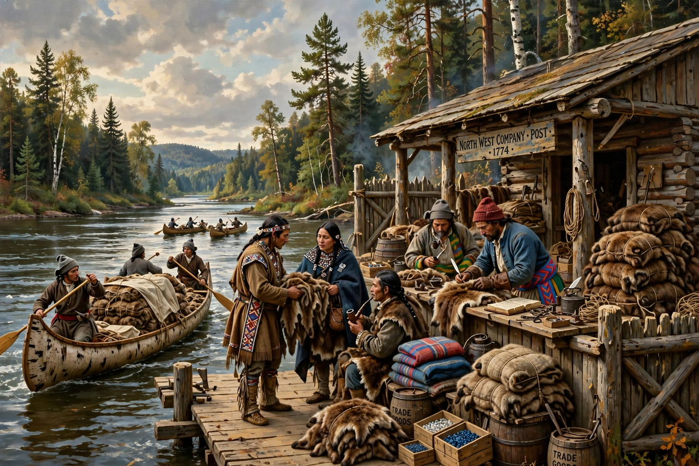

The fur trade is a worldwide industry dealing in the acquisition and sale of animal fur. In North America it shaped exploration, alliances and conflict from the 16th to 19th centuries.
French, Dutch, British and later American traders exchanged European goods for beaver pelts trapped by Indigenous peoples including the Anishinaabe, Haudenosaunee and Cree around the Great Lakes and Hudson Bay. Rivalry fuelled the Beaver Wars and Anglo-French conflicts in Canada.
By the mid-1800s beaver depletion, changing fashion (silk hats), and settlement reduced the trade, though trapping continued. Modern fur trade is regulated and controversial over animal welfare.
Trading posts became cities such as Winnipeg, Edmonton and St. Louis; Métis culture emerged from fur-trade families.